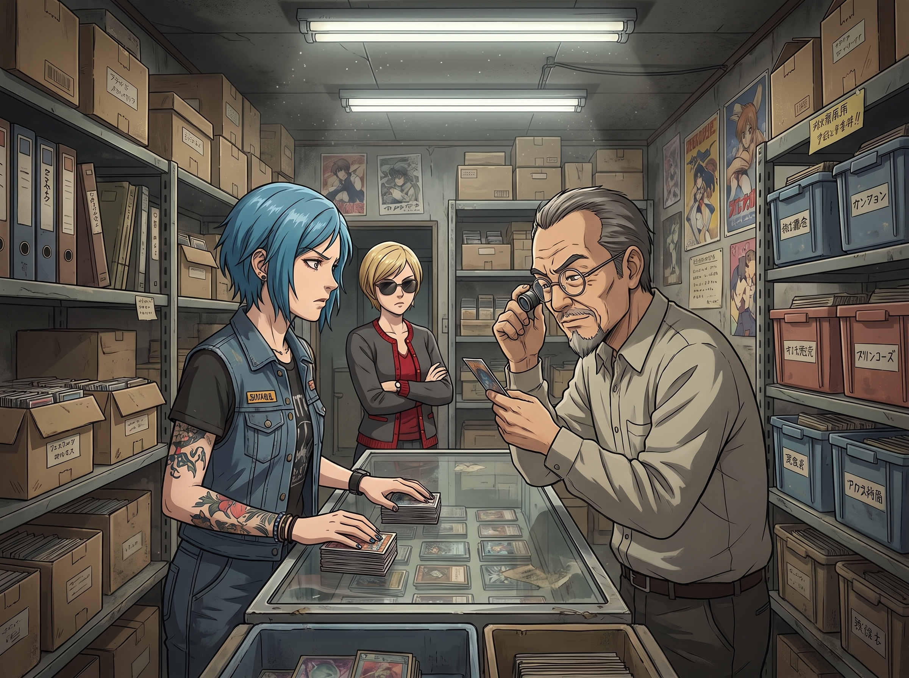
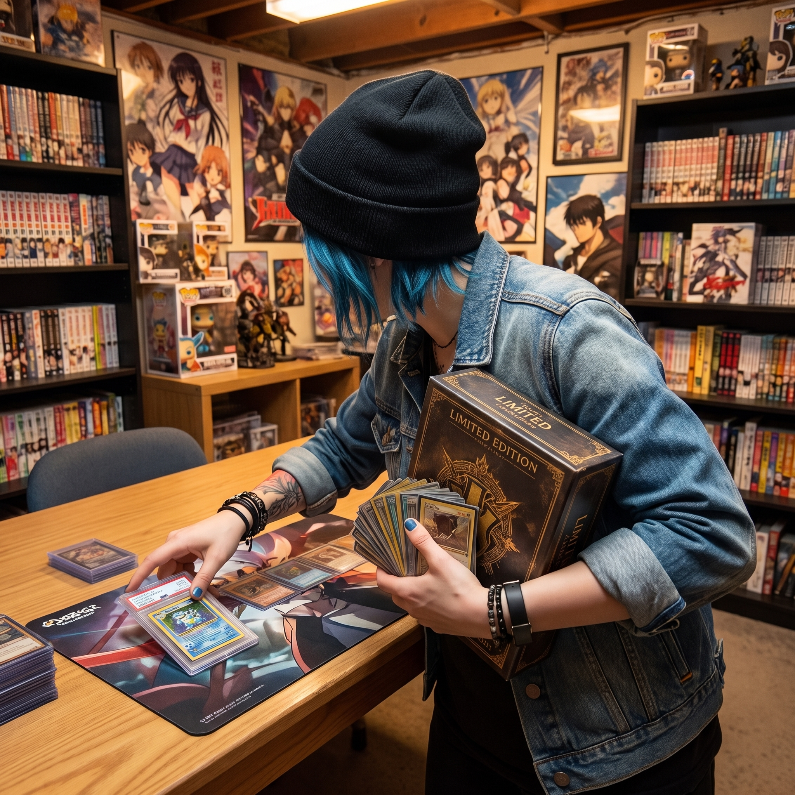

秋葉原的財報估值法則


秋葉原的一條隱秘窄巷裡，二手卡牌店地下室瀰漫著舊紙板與防潮箱的獨特氣味。
玻璃櫃檯兩側，氣氛劍拔弩張。一邊是穿著工裝背心、頂著一頭藍髮的 Chloe，另一邊是留著灰白山羊鬍、在東京卡圈被稱為「老狐狸」的店長高橋。Victoria 則抱著雙臂，戴著墨鏡，用看著華爾街垃圾債券的眼神審視著滿屋子的卡片。至於 Max 和 Kate，兩人早在轉進這條窄巷前，就被隔壁一家掛滿復古信紙與鋼筆的中古文具店勾走了魂，說好晚點再會合。
Chloe 毫不客氣地將一個防爆防水的小黑盒「啪」地一聲拍在櫃檯上，彈開鎖扣。
靜靜躺在黑色天鵝絨防震墊裡的，是她這次跨國交易的終極籌碼：一張頂流巨星的低編厚卡卡簽。
高橋的眼睛瞬間亮了，立刻戴上白手套，拿起放大鏡。在日本，這類北美市場的頂配厚卡極難無損流入亞洲。
高橋喃喃自語，隨後從身後的保險箱裡請出了他的交易品：一張滿分評級的九零年代日本本土摔角傳奇絕版特卡，外加三張高編帶簽的補充卡作為添頭。
高橋用帶口音的英文表示，這是一筆絕對公平的傳奇換傳奇一換四交易。
但 Chloe 根本不吃情懷這一套。她的瞳孔裡此刻正在瘋狂運轉著一套極度殘酷的防守型估值法則。
「少來這套，高橋老頭。」Chloe 雙手撐在櫃檯上，毫不留情地開始拆解對方的報價，「我這張是頂流，不扣分；厚卡加多窗卡簽，視同低編豁免，完美鎖死免懲罰。它的價值是絕對的硬通貨。」
她伸出一根貼著黑色創可貼的手指，點了點那張看似無敵的老卡，冷笑了一聲：「至於你這張，舊卡確實可以免除常規懲罰，但別忘了鐵律——滿分裸卡必須按係數換算。更何況，你得退回這張卡在最近市場暴漲前的落槌均價來對標。這張老卡去泡沫後的真實基準，連我這張的三分之二都不到。」
高橋的臉色微微一變，顯然沒料到這個看起來像街頭太妹的美國女孩，居然精通如此深度的二級市場擠水算法。他試圖把那三張補充卡往前推了推，強調這是極具潛力的補充。
Chloe 嚼著口香糖，翻了個巨大的白眼：「這三張都是常規紙卡，直接扣分；而且全是高編簽，再扣分！這種高編簽的擠水率高得嚇人。按照我的核算規則，必須保證未來批量處理時有足夠的淨利。這三張破卡的脫水殘值算下來絕對低於門檻，在我的系統裡直接拉黑，送我都不要！」
站在後面的 Victoria 雖然完全聽不懂什麼叫這些卡牌術語，但當她聽到「去泡沫落槌均價」和「保證淨利」時，名媛的嘴角不自覺地勾起了一抹讚賞的弧度。這完全是頂級對沖基金經理在進行資產剝離時的專業話術。
「That's my girl.」Victoria 輕聲嘀咕了一句，順手推了一下墨鏡。
被徹底看穿底牌的高橋擦了擦額頭的汗，意識到今天遇到了真正的北美倒爺硬茬。他無奈地收回了那三張被嫌棄的卡，轉而從櫃檯最深處的鎖櫃裡，拿出了一整盒未拆封的亞洲限定原箱，以及一張帶有極品物料的低編折射卡。
Chloe 的目光迅速掃過那張極品物料卡，大腦再次閃電核算：極品物料享豁免，按下位白版推算，利潤空間完美。而那盒未拆封的原箱，剛好可以帶回二號車廂，在網路交易平台上進行批量上架處理，對沖跨國物流與手續費成本。
「成交。」
Chloe 乾脆利落地把那張頂流卡推了過去，一把將老卡、極品物料卡和那盒沉甸甸的原箱攬進懷裡。
就在這時，地下室的木門「吱呀」一聲被推開，Max 和 Kate 剛好逛完文具店回來會合。Kate 手裡還提著一個印著和紙圖案的小紙袋，看見眼前這幅陣仗，好奇地探頭張望。
「咔嚓！」 Max 眼明手快地舉起拍立得按下快門，拍立得吐出了一張相片。畫面上，是藍髮機械師在充滿御宅族氣息的地下室裡，如同華爾街大鱷般完成資產收割的囂張背影。
「你們剛才是不是又在做什麼可怕的談判？」Kate 有些擔心地看著高橋那張寫滿劫後餘生的臉，小聲問道。
「放心，Kate，」Victoria 推了推墨鏡，語氣裡帶著一絲欣賞，「這是一場光明正大的資產交易，沒有人受傷，除了這位店長先生的心臟。」
走出卡店，東京的霓虹燈閃爍。Chloe 掂了掂手裡那盒原箱，得意地朝 Max 挑了挑眉：「看到沒？等我們回了華盛頓州，把這箱貨分批處理掉，我們未來半年的櫻桃汽水和底片錢，就全由這位高橋先生買單了。」